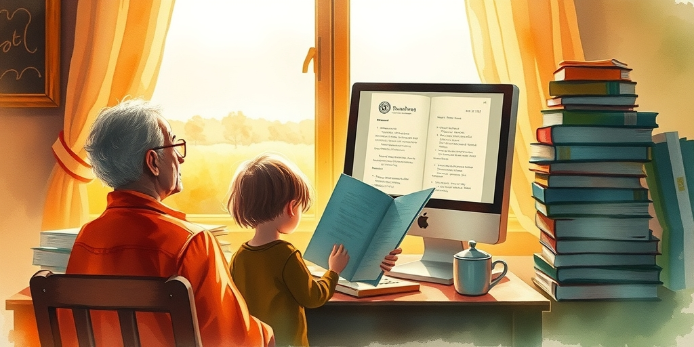
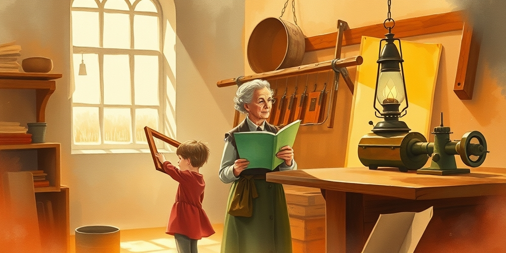
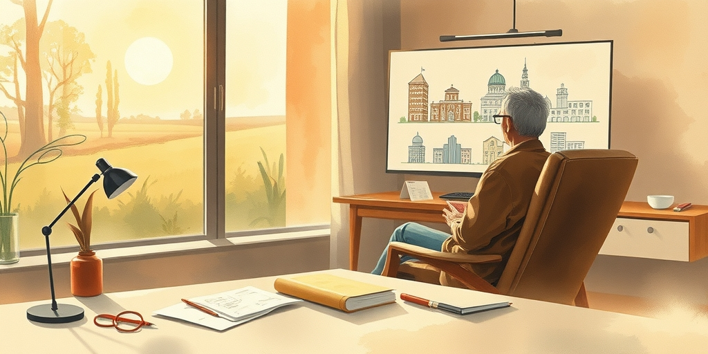
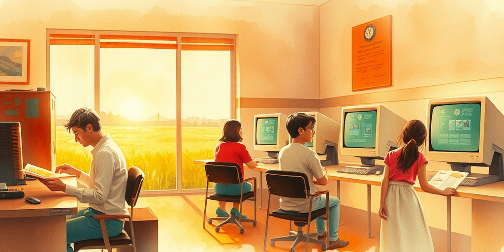

小汪老师的成长洞察 · 属于你的成长专栏
2026年6月，马斯克说人工智能将在五年内超越全人类智慧的总和。办公室里没人抬头。大家继续盯着屏幕，让AI帮忙写周报。真正让人不安的，不是这条预言本身，而是我们听完之后，连不安都懒得表达。

马斯克说出那个数字的时候，会议室里有人在看手机。五年前，类似的话会掀起一周的争论。现在它只是一条推送，和天气预报、股市涨跌排在一起。
不是人们不信。恰恰是信得太深，反而不知道怎么反应。我认识一个做了二十年翻译的朋友，去年开始主要工作是校对AI的初稿。他说，看着那些比自己翻得还快的句子，心里不是愤怒，是空。
这种空，不是害怕失业。是突然不知道二十年攒下的本事，到底算什么东西。

1811年，英国诺丁汉的织袜工人在夜里砸毁机器。他们以为自己恨的是那些铁架子。其实恨的是织了一辈子的手艺，一夜之间成了废铁。
1980年代，底特律的汽车工人看着机械臂装车门，精度比老师傅还高。工会谈判桌上争的是工资，心里争的是尊严。一个干了三十年的装配工说，最难受的不是钱少了，是孙子问他“爷爷你以前做什么的”，他答不上来。
今天的AI没有铁臂，没有齿轮。它静悄悄地坐在云端，替你写邮件、做报表、画图纸。你连砸它的机会都没有。

人类对智能的恐惧，包装着一层“失控”的外壳。科幻电影里，AI总是要统治世界。但现实中，最刺痛人的场景是AI帮你做完了你引以为傲的工作，然后问你：还需要修改吗？
一个建筑师朋友告诉我，他用了三个月构思的方案，AI在十七秒内生成了六个变体。每一个都合理。他说那一刻他觉得自己像抄写员遇见了印刷机。不是方案被否定了，是他作为创造者的意义被抽空了。
这才是恐慌的根源。不是机器太聪明，是我们突然找不到自己不可替代的理由。

十九世纪的纺织工人砸完机器之后，花了整整两代人重新定义“工作”。他们发现，人不是只能织布，还可以设计花样、改良机械、组织工会。手艺死了，手艺人的身份没有死。
二十世纪末，个人电脑干掉了打字员、绘图员、记账员。但同一批人里，有人学会了编程，有人做起了平面设计，有人开了打印店。技术的每一次碾压，都逼着人类往上游走一步。
AI这次不同，它往上走的步子太快。但有一点没变：意义从来不藏在具体的技能里。它藏在你为什么做这件事的理由里。那个理由，机器编不出来。
2026年的某个傍晚，一个中年人关掉电脑，走出写字楼。他今天用AI完成了过去三天的活。他没有被开除，工资还涨了。
但他在便利店买啤酒的时候，忽然想起二十年前，自己手写的第一份策划案。老板说写得烂，但眼里有光。现在他每天产出翻了三倍，却很久没听到“有想法”这三个字了。
马斯克的预言会不会成真，他不在乎。他在乎的是，五年后自己还能不能对孙子说清楚，爷爷这辈子到底做了什么。
值得思考的几个问题
每一代人都有自己的诺丁汉之夜。织袜工砸机器的时候，不知道自己正在为现代设计行业腾出空间。今天的我们面对AI，同样看不清出口。但有一件事是清楚的：技术从来不负责给人生提供意义。它只负责拆掉旧的脚手架，逼你问自己那个老问题——除了能干，我到底是谁。
小汪老师的成长洞察 · 属于你的成长专栏